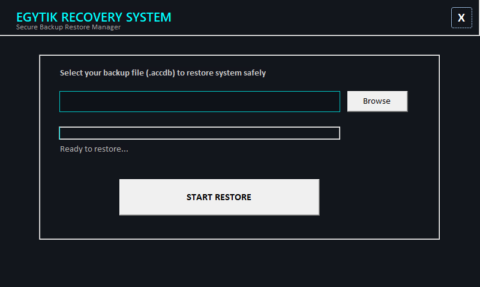
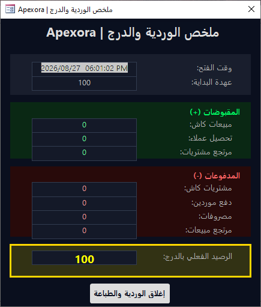

نحن لا نطور نظاماً نمطياً واحداً، بل نصمم ونبني أي نظام إداري، محاسبي، أو خدمي متكامل باستخدام قواعد بيانات Microsoft Access وبيئة VBA لتلبية الاحتياجات الفريدة لنشاطك التجاري أو الخدمي بدقة متناهية.
سواء كنت تحتاج إلى نظام لإدارة المتاجر والمخازن، أو نظام مخصص للشركات الخدمية، المستشفيات، أو الأرشيف؛ فإننا نقوم بتحليل ورسم وهندسة النظام بالكامل ليطابق دورتك المستندية بدقة تامة مع أمان فائق واستقرار بلا حدود.

واجهة تشغيل رئيسية مصممة بعناية فائقة لعرض المؤشرات الحيوية، الإحصائيات اللحظية، وتوفير وصول فوري وآمن لكافة أقسام النظام البرمجي.

بوابة دخول مشفرة ومؤمنة بالكامل تضمن حماية خصوصية البيانات ومنع الوصول غير المصرح به مع ربط مباشر بمستويات الصلاحيات.

أداة متقدمة تتيح للمستخدمين تحديث كلمات المرور الخاصة بهم بسلاسة ووفق أعلى معايير تشفير وحماية سرية الحسابات الإدارية.

محرك مبيعات فائق السرعة مبني بأكواد VBA متطورة لدعم أجهزة الماسح الضوئي (الباركود) وإنجاز المعاملات النقدية بدقة وسرعة مذهلة.

نظام متكامل لتسجيل فواتير الشراء، متابعة حسابات الموردين، وتحديث تكاليف المخزون بشكل آلي وفوري لضمان دقة الحسابات.

آلية مرنة ومحكمة لإدارة استرجاع المنتجات المباعة مع إعادة تسوية أرصدة المخازن والخزينة النقدية تلقائياً دون أي تفاوت.

مراقبة وتوثيق البضائع المرتجعة للموردين لضمان مطابقة المطالبات المالية والعهد المخزنية بدقة واحترافية عالية.


استعلامات تحليلية ذكية ومتعددة لمتابعة الكميات المتاحة، حركات الوارد والصادر، وإصدار تنبيهات استباقية لإدارة المخزون بفاعلية.

واجهة تنظيمية شاملة لإدارة وتصنيف المنتجات، ضبط أسعار البيع والشراء، تتبع هوامش الأرباح، وتوليد الباركود.

تسجيل ومتابعة قواعد بيانات العملاء، الحسابات المالية، الأرصدة والمديونيات، مع تحليل سلوك الشراء لتعزيز ولاء العملاء.

متابعة دقيقة لبيانات الموردين، الأرصدة الافتتاحية والجارية، وتسهيل دورة التوريد واعتماد المدفوعات.

نظام مالي محكم لمتابعة الفواتير المستحقة وتسجيل الدفعات النقدية والمصرفية للموردين مع التحديث الفوري للأرصدة.

متابعة ذمم الفواتير الآجلة، تسجيل سندات التحصيل والدفعات النقدية للعملاء، والحفاظ على سيولة نقدية مستقرة.

تسجيل وتصنيف النفقات اليومية، الشهرية، والسنوية بدقة، ومراقبة مؤشرات الصرف لضبط ميزانية التشغيل بكفاءة.

التحكم في حركة رأس المال، إدارة عمليات التحويل النقدي بين الخزينة والبنك وقنوات الدفع، مع تقارير حركات مالية تفصيلية.

أداة سريعة ومرنة لفرز وتحديد أصناف المنتجات وطباعة ملصقات الأسعار والباركود المخصصة بكفاءة عالية.

تسجيل المنتجات التالفة أو المنتهية وإدارتها محاسبياً مع خصمها التلقائي من الأرصدة وإدراجها ضمن التقارير الرقابية.

تقارير تحليلية واحترافية مبنية على محرك تقارير Access لرصد صافي الأرباح، حركة التدفقات النقدية، والأداء المالي العام.

إنشاء حسابات مستخدمين متعددة، تخصيص المستويات الوظيفية (مدير، مشرف، كاشير)، والتحكم التام في صلاحيات الشاشات.

أداة إدارية رقابية متقدمة لتصفير العدادات وإعادة تهيئة النظام عند البدء الفعلي، مؤمنة بتنبيهات أمان صارمة لمنع الفقد العشوائي.

أداة احترافية لتأمين وعمل نسخ احتياطية لقاعدة البيانات وحفظها في مسارات آمنة لضمان استمرارية الأعمال وحماية البيانات ضد أي طارئ.

نظام متطور لاسترجاع قواعد البيانات والنسخ الاحتياطية بسرعة وكفاءة فائقة لضمان التعافي الفوري في حالات الطوارئ.

ملخص لحظي شامل لحركة الدرج، إجمالي المقبوضات والمدفوعات، ومطابقة النقدية الفعلية بدقة تامة عند تسليم الورديات.
نفتخر بخدمة أصحاب الأنشطة التجارية والمشروعات وتلبية احتياجاتهم البرمجية بدقة تامة.
"بصراحة النظام ممتاز جداً وسريع، ومحرك نقاط البيع فرق معانا كتير في سرعة خدمة الزبائن وتسجيل المبيعات بدون أي أخطاء. شكراً للمهندس محمد على المتابعة."
"أفضل ما في الموضوع هو دقة تقارير المخازن وحسابات الموردين. النظام تم تصميمه وتعديله ليناسب طبيعة شغلنا بدقة تامة مقارنة بالبرامج الجاهزة المعقدة."
"خدمة احترافية وهندسة قواعد بيانات عالية الأمان. تم ربط الصلاحيات وعمل النسخ الاحتياطي بكل سهولة، والأداء مستقر جداً وثابت."